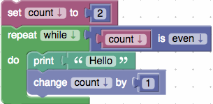
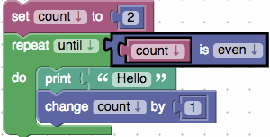

Repeat
The simple repeat block runs the code in its body the specified number of times. For example, the below block will print "Hello" ten times.

The simple repeat block runs the code in its body the specified number of times. For example, the below block will print "Hello" ten times.
The repeat while block will run the code in its body while the condition is true. For example, the below block group will print "Hello" one time. 
Another option available on the repeat while block is repeat until. Repeat until loops are similar to repeat while loops except that they repeat their bodies until some condition is true. The following blocks are equivalent to the previous example except for changing the block mode from while to until. This example using repeat until will not print anything. 
The count with block, which is called a for loop in most programming languages, advances a variable from the first value to the second value by the increment amount (or third value). The body is run one time for each passed value. For example, the following program prints the numbers 1, 3, and 5.

The for each block is similar to a for loop, except instead of giving the loop variable values in a numeric sequence, it uses values from a list. The following example prints each element of the list a single time. The output is "alpha", "beta", "gamma".

The break out of loop block provides an early exit from a loop. The following example prints "alpha" on the first iteration and breaks out of the loop on the second iteration when the loop variable is equal to "beta". The third item in the list is never reached.

The break out of loop has another mode, continue with next iteration. The continue with next iteration causes the remaining code in the body to be skipped and for the next iteration (pass) of the loop to begin. The example is the same as the break out of loop example but the break out of loop has been replaced with a continue with next iteration loop. Unlike the previous example, the following example will print "alpha", "beta", "gamma".